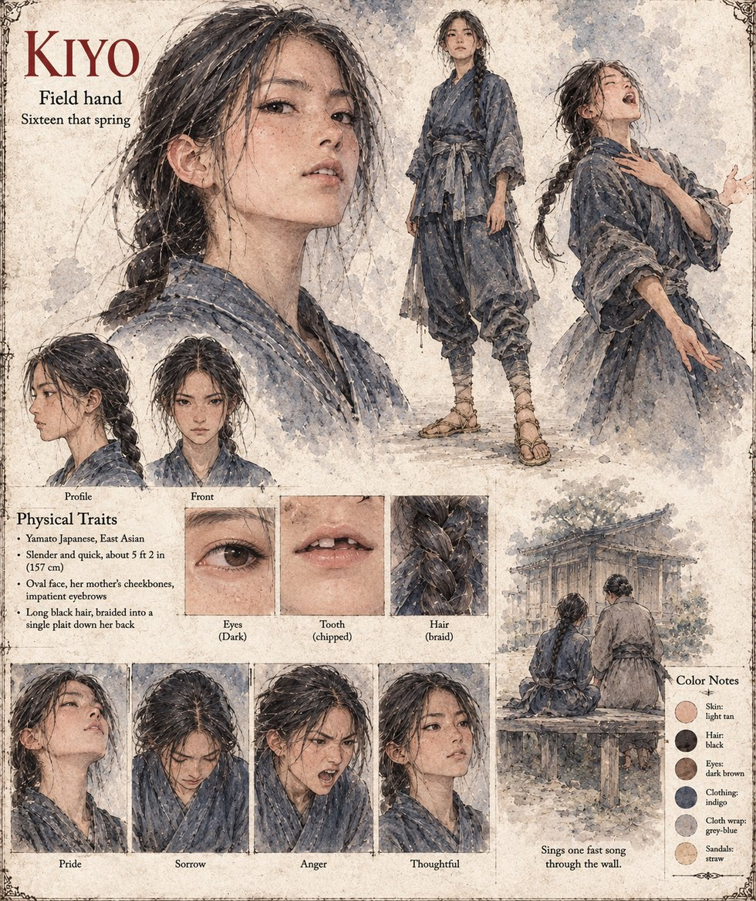

Kiyo
Field hand · Isamu and Chiyo’s daughter · sings one fast song through the wall · 16 that spring, by the manuscript
The daughter of Isamu and Chiyo, a field hand of sixteen that spring who works a full day beside her mother, badgers her father to let her try the fast songs, and has her mother’s ear for pitch. She is taken into bonded service with Chiyo; the steward who closes the accounts decides, on the sum still owed, to take her as well. On the ninth day she sings one fast song through the wall, and it is answered at the old tempo. The pack’s Prompt 6 draws the moment, with Chiyo humming low over her work three cells away. She goes home with her mother afterwards and teaches her own children both tempi.
Her age and her fast songs are the manuscript’s; the sheet’s details are the pack’s. It makes her slender and quick at about 5 ft 2 in (157 cm), with an oval face, her mother’s cheekbones and impatient eyebrows, long black hair in a single plait down her back, dark restless eyes, light freckled skin, a chip in one front tooth, and an indigo hemp tunic over wrapped trousers; she taps the tempo against her thigh. Its expression panels are Pride, Sorrow, Anger and Thoughtful, with close-ups of her eyes, the chipped tooth and the plait. One scene, captioned Sings one fast song through the wall, shows her seated on a wooden bench in front of a timber building beside a second figure in grey seen from behind; the sheet does not say who.